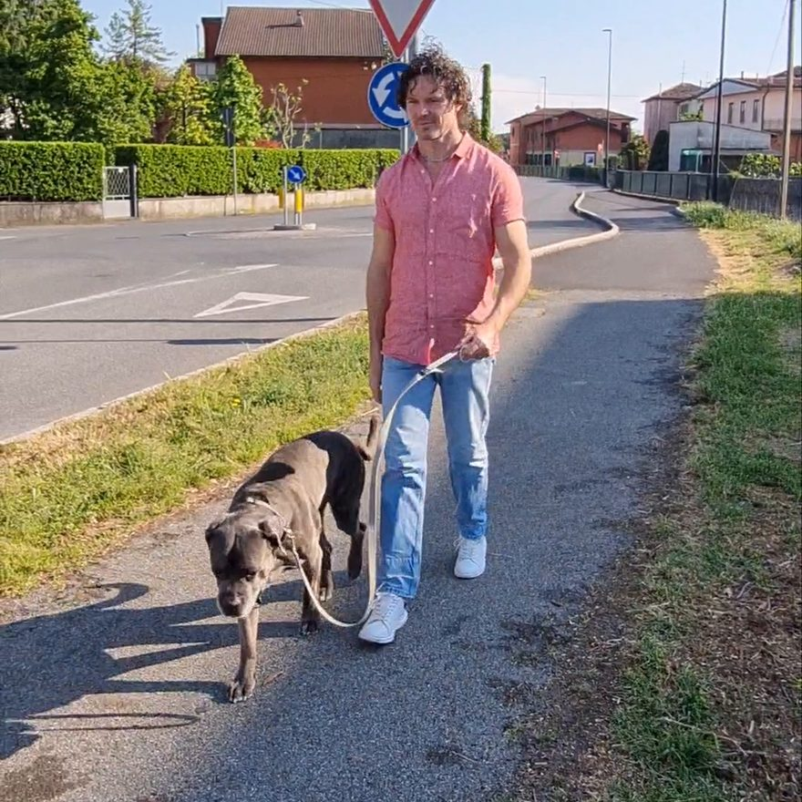

Giornalista
Emiliano
Cuti
Cronaca locale · Finanza · AI · Informatica
Cronaca locale, finanza, intelligenza artificiale e informatica. Dati aperti, fonti citate, limiti dichiarati.
Entra nell'archivioEmiliano
Cuti
Cronaca locale · Finanza · AI · Informatica

Scrivo ciò che gli altri ignorano. Verità locali, crepe umane ed echi civici.
Nessun cookie, nessun tracciamento.
Inchieste sul Sudmilano costruite su dati aperti, documenti e verifiche. Ogni dossier dichiara il metodo, le fonti e ciò che non è stato possibile sapere.
Morti sul lavoro a Lodi: 20 vittime verificate, l'indice di mortalità più alto della Lombardia Mercati rionali del Lodigiano: a Lodi 345 posteggi, sei mercati in cinque giorni Apri cronacaMercati, ETF e finanza personale. Metodo scientifico, dati citati e fonti verificabili, senza promesse di rendimento.
AI, il rischio del troppo calcolo: la scommessa ribassista di David Orr Apri finanzaModelli, strumenti e impatti dell'intelligenza artificiale. Prove pratiche, risultati osservati e limiti dichiarati.
Apri aiSoftware, guide e sicurezza informatica. Codice verificato e passi riproducibili, con le fonti.
Apri informaticaDiciassette indicatori da dodici inchieste, comune per comune. Una sola tabella per leggere il territorio invece di quindici rapporti separati. Ogni colonna porta la sua fonte e la sua inchiesta; dove il dato manca la cella resta vuota.
Atlante dei quattordici comuni Apri l'atlanteCronaca, finanza, software e intelligenza artificiale. Il metodo, le fonti e i limiti dichiarati.
Leggi la biografia